Multimodal (MM)
Understand and generate by integrating multiple modalities such as text, images, and videos.
17 papers
Written by Junkun Yuan.
Click here to go back to main contents.
Table of contents ▶
Papers are displayed in reverse chronological order. High-impact or inspiring works are highlighted in red.
- Understanding: Foundation Algorithms & Models (11)
- Understanding and Generation: Foundation Algorithms & Models (6)
Qwen2.5-VL(arXiv 2025) Qwen2-VL(arXiv 2024) BLIP-3(arXiv 2024) MiniGPT-v2(arXiv 2024) Qwen-VL(arXiv 2023) MiniGPT-4(ICLR 2024) LLaVA(NeurIPS 2023) BLIP-2(ICML 2023) Flamingo(NeurIPS 2022) BLIP(ICML 2022) CLIP(ICML 2021)
MMaDA(NeurIPS 2025) BAGEL(arXiv 2025) BLIP3-o(arXiv 2025) UniFluid(arXiv 2025) GPT-4o(arXiv 2024) Transfusion(ICLR 2025)
Understanding: Foundation Algorithms & Models
Qwen2.5-VL Technical Report
Shuai Bai, Keqin Chen, Xuejing Liu, Jialin Wang, Wenbin Ge, Sibo Song, Kai Dang, Peng Wang, Shijie Wang, Jun Tang, Humen Zhong, Yuanzhi Zhu, Mingkun Yang, Zhaohai Li, Jianqiang Wan, Pengfei Wang, Wei Ding, Zheren Fu, Yiheng Xu, Jiabo Ye, Xi Zhang, Tianbao Xie, Zesen Cheng, Hang Zhang, Zhibo Yang, Haiyang Xu, Junyang Lin
Alibaba Group
arXiv, 2025
Feb 19, 2025 | Qwen2.5-VL | code
It improves Qwen2-VL by employing window attention, native dynamic resolution, absolute time encoding, and more high-quality data.
- Visual encoder. The used ViT is trained from scratch. It employs self-attention + window attention to improve efficiency. It employs MRoPE as position embedding. Images and videos are sampled at native resolutions and dynamic frame rates.
- Vision-Language Merger. Group adjacent four visual patches, concat them along feature dimensions, and project them using a two-layer MLP.
- Language model. Qwen2.5 LLM.
- Pre-training stages. (1) Stage 1: ViT is trained to learn visual knowledge; (2) Stage 2: all model parameters are optimized to learn diverse knowledge and tasks; (3) Stage 3: all model parameters are optimized to learn long sequences by incorporating video and agent-based data.
- Post-training stages. SFT and DPO are employed to optimize the language model.
- Sparkling capabilities. Omni-document parsing, precise object grounding (based on real resolution), ultra-long video understanding and grounding, and enhanced agent functionality.
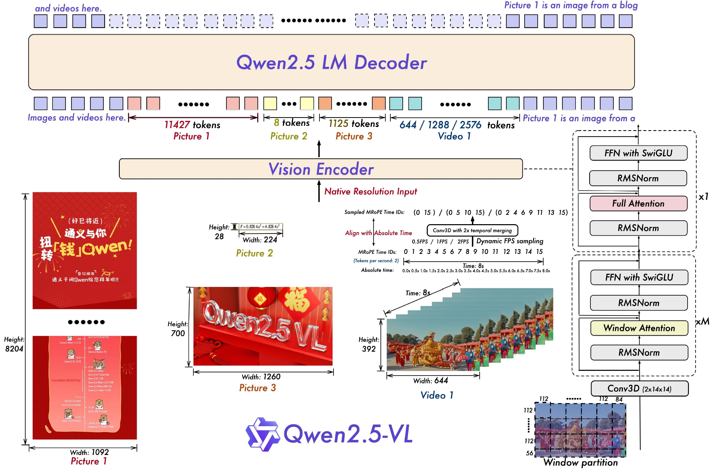
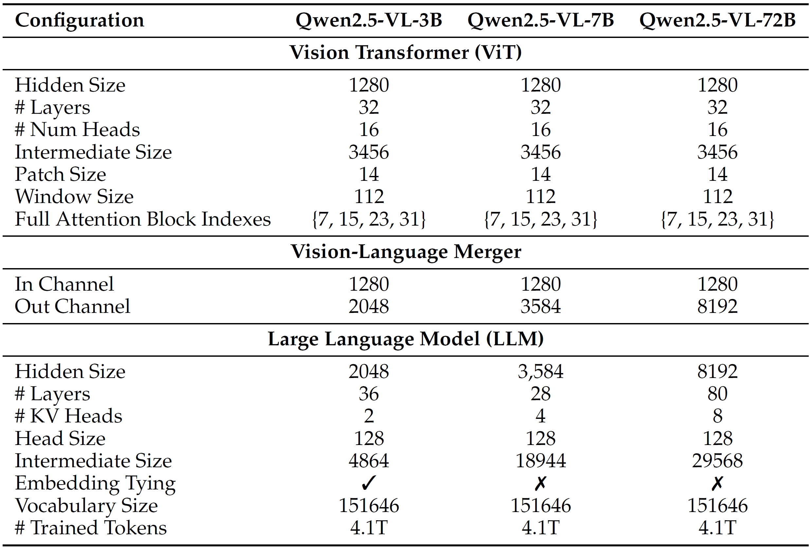
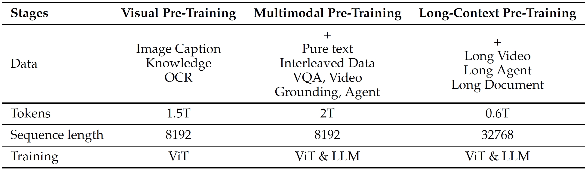
Qwen2-VL: Enhancing Vision-Language Model's Perception of the World at Any Resolution
Peng Wang, Shuai Bai, Sinan Tan, Shijie Wang, Zhihao Fan, Jinze Bai, Keqin Chen, Xuejing Liu, Jialin Wang, Wenbin Ge, Yang Fan, Kai Dang, Mengfei Du, Xuancheng Ren, Rui Men, Dayiheng Liu, Chang Zhou, Jingren Zhou, Junyang Lin
Alibaba Group
arXiv, 2024
Sep 18, 2024 | Qwen2-VL | code
It improves Qwen-VL by using a Naive Dynamic Resolution mechanism with multimodal RoPE, and a unified image-video processing paradigm.
- Visual encoder (675M). Use self-developed ViT. Employ Naive Dynamic Resolution with 2D-RoPE to provide a variable number of visual tokens for images or videos with different resolution and frame number. Compress visual tokens by 2x2 using MLP.
- Language model (1.5B, 7.6B, 72B). Qwen series.
- Unified image and video processing: (1) Sample each video at two frames per second; (2) Compress video inputs by 4x using 3D convs; (3) Each image is treated as two identical frames for consistency. (4) The limit of tokens per video is set to 16,384 by adjusting the resolution.
- Three-stage training (same as Qwen-VL). (1) Pre-training on 600B tokens by optimizing ViT; (2) Multi-task pre-training on 600B + 800B tokens by optimizing all model parameters; (3) Instruction tuning on instruction-following data (ChatML format) by optimizing LLM.
- Three model sizes: Qwen2-VL-2B (on-device), Qwen2-VL-7B (performance-optimized), Qwen2-VL-72B (most capable).
- Capabilities: general chat, multilingual image text understanding, formula recognition, function calling, UI interaction, long document understanding, code/math reasoning, video understanding, grounding, live chat, and agent potential.
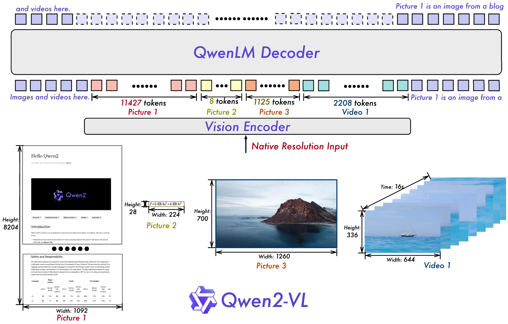
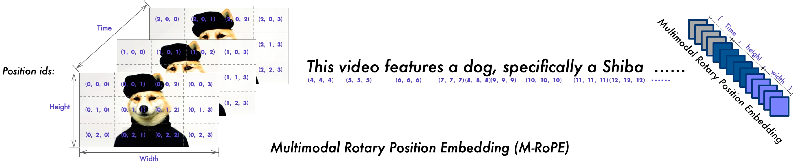
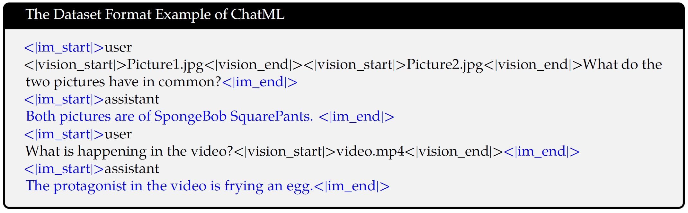
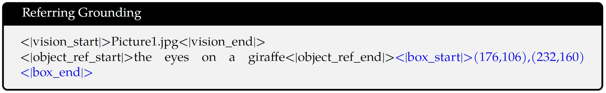
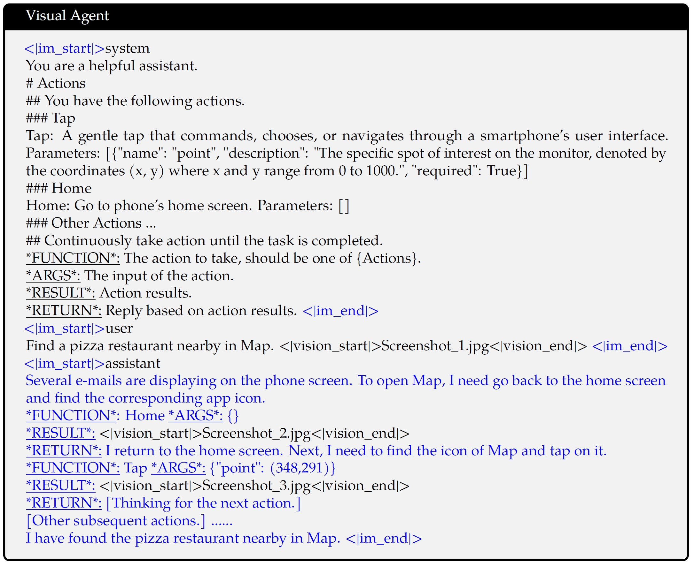
xGen-MM (BLIP-3): A Family of Open Large Multimodal Models
Le Xue, Manli Shu, Anas Awadalla, Jun Wang, An Yan, Senthil Purushwalkam, Honglu Zhou, Viraj Prabhu, Yutong Dai, Michael S Ryoo, Shrikant Kendre, Jieyu Zhang, Shaoyen Tseng, Gustavo A Lujan-Moreno, Matthew L Olson, Musashi Hinck, David Cobbley, Vasudev Lal, Can Qin, Shu Zhang, Chia-Chih Chen, Ning Yu, Juntao Tan, Tulika Manoj Awalgaonkar, Shelby Heinecke, Huan Wang, Yejin Choi, Ludwig Schmidt, Zeyuan Chen, Silvio Savarese, Juan Carlos Niebles, Caiming Xiong, Ran Xu
Salesforce AI Research, Intel Labs, University of Washington
arXiv, 2024
It improves BLIP-2 by introducing interleaved multimodal data, unified training objective, and visual resampler.
- Training. (1) Stage 1: base resolution pre-training on 100B tokens with 384x384 visual resolution; (2) Stage 2: high resolution pre-training on high-quality data; (3) Stage 3: SFT on single-image instruction-following data; (4) Stage 4: SFT on multi-image interleaved data.
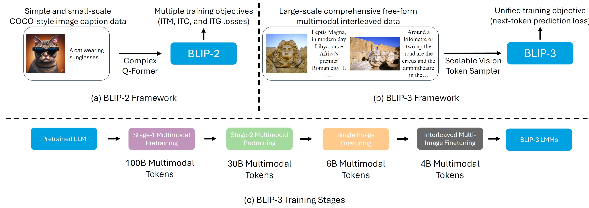
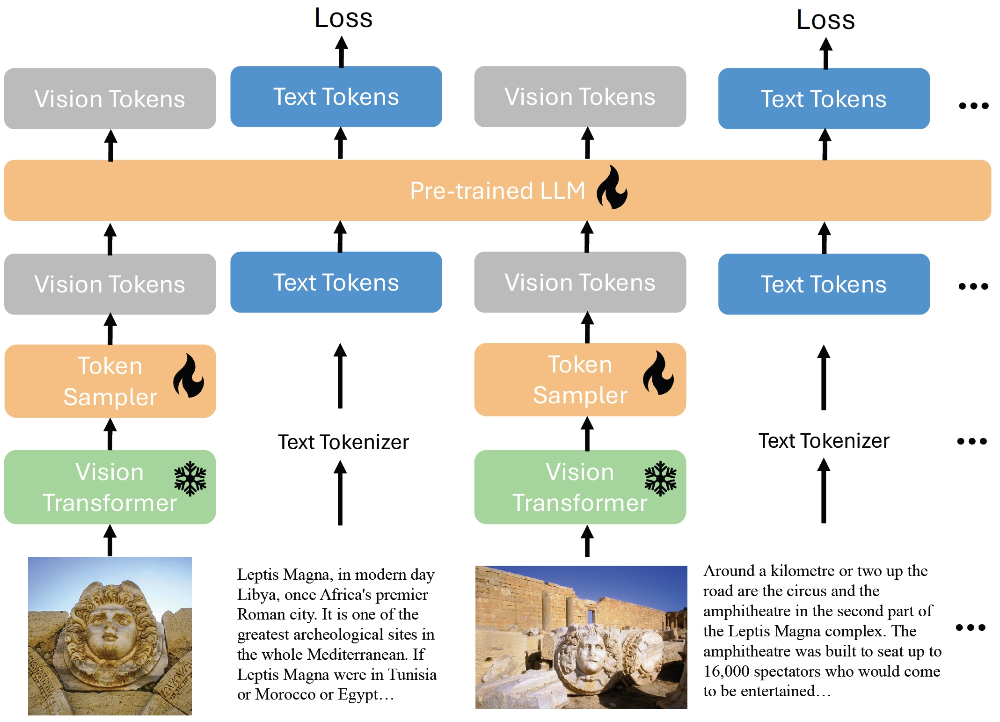
MiniGPT-v2: Large Language Model as a Unified Interface for Vision-Language Multi-Task Learning
Jun Chen, Deyao Zhu, Xiaoqian Shen, Xiang Li, Zechun Liu, Pengchuan Zhang, Raghuraman Krishnamoorthi, Vikas Chandra, Yunyang Xiong, Mohamed Elhoseiny
King Abdullah University of Science and Technology (KAUST), Meta AI Research
arXiv, 2024
Oct 14, 2023 | MiniGPT-v2 | code
It makes the model learn to tackle 6 tasks with different task identifiers through three-stage training (maybe inspired by Qwen-VL).
- Visual structure. Use ViT-G/14 from EVA-CLIP with a Q-Former (same as MiniGPT-4). Image resolution is increased from 224x224 to 448x448, and every four neighboring visual tokens are concatenated into a single token to save compute by reducing tokens.
- Language structure. Language model is upgraded from Vicuna to LLaMA2-chat (7B).
- Task identifiers are used by the model to identify tasks. VQA: [vqa]; captioning: [caption]; grounded captioning: [grounding]; referring expression comprehension: [refer]; referring expression generation: [identify]; object parsing and grounding: [detection].
- The grounding task is introduced to improve MiniGPT (maybe inspired by Qwen-VL).
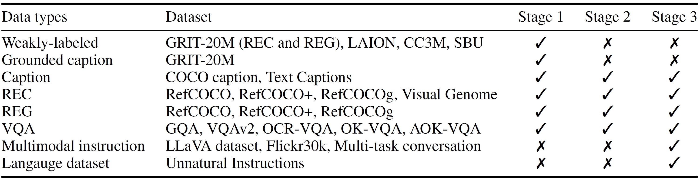
Qwen-VL: A Frontier Large Vision-Language Model with Versatile Abilities
Jinze Bai, Shuai Bai, Shusheng Yang, Shijie Wang, Sinan Tan, Peng Wang, Junyang Lin, Chang Zhou, Jingren Zhou
Alibaba Group
arXiv, 2023
Built upon the language model Qwen-7B, it makes Qwen-VL learn image description, QA, grounding, and text-reading through three-stage training.
- Visual encoder (1.9B): ViT (OpenCLIP's ViT-bigG).
- Vision-language adapter (0.08B): Q-Former with 2D absolute positional encodings to produce 256 visual tokens.
- LLM (7.7B): Qwen-7B.
- Special tokens: `<img> </img>`: images; `<box> </box>`: normalized bounding box; `<ref> </ref>`: the content referred by bounding box.
- Stage 1 (pre-training): large-scale, weakly labeled, web-crawled image-text pairs. 5B data, 1.4B cleaned data (77% English and 23% Chinese). Freeze LLM and optimize the vision encoder and VL adapter. Train 50K steps with batchsize of 30720, consume 1.5B samples. Image: 224x224.
- Stage 2 (multi-task pre-training). Captioning, VQA, grounding, ref grounding, grounded captioning, OCR, pure-text autoregression. Image: 448x448. Train the whole model.
- Stage 3 (instruction tuning). Use 350K instruction tuning data. Freeze visual encoder and optimize the LLM and adapter.
- Capabilities: multi-lingual, multi-image, and multi-round conversation.
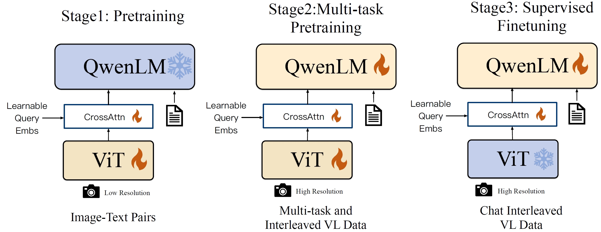
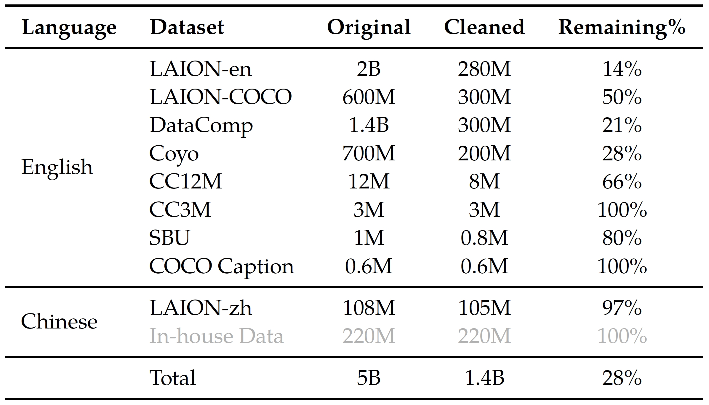
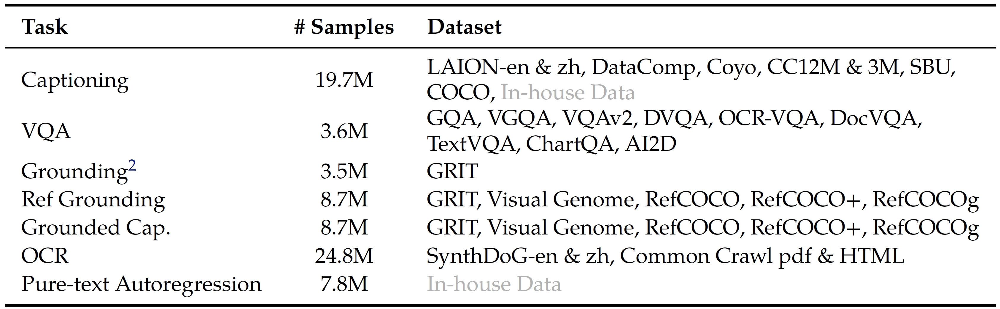
MiniGPT-4: Enhancing Vision-Language Understanding with Advanced Large Language Models
Deyao Zhu, Jun Chen, Xiaoqian Shen, Xiang Li, Mohamed Elhoseiny
King Abdullah University of Science and Technology
International Conference on Learning Representations (ICLR), 2024
Apr 20, 2023 | MiniGPT-4 | code
It aligns a frozen visual encoder with a frozen LLM (Vicuna) using one projection layer.
- Structure. The same pretrained vision module as BLIP-2: ViT-G/14 from EVA-CLIP with a Q-Former. Language model: Vicuna. Connector: a single projection layer.
- Training. Pre-training + instruction-tuning. It only fine-tunes the projection layer.
- Training data. Pre-training: LAION, Conceptual Captions, SBU. Instruction-tuning: 3500 images from Conceptual Caption with captions generated by the pre-trained model (cleaned by ChatGPT).
Visual Instruction Tuning
Haotian Liu, Chunyuan Li, Qingyang Wu, Yong Jae Lee
University of Wisconsin-Madison, Microsoft Research, Columbia University
Advances in Neural Information Processing Systems (NeurIPS), 2023
It makes the first attempt to use GPT-4 to generate multimodal instruction-following data and performs multimodal instruction fine-tuning.
- Structure. (1) Vision encoder: pre-trained CLIP; (2) Connector: a linear layer; (3) Language model: Vicuna.
- Instruction-following data. 158K: 25K conversations + 23K detailed description + 77K complex reasoning.
- Training. (1) Stage 1: train connector on CC3M instruction-following data; (2) Stage 2: train connector & LLM on 158K instruction-following data.
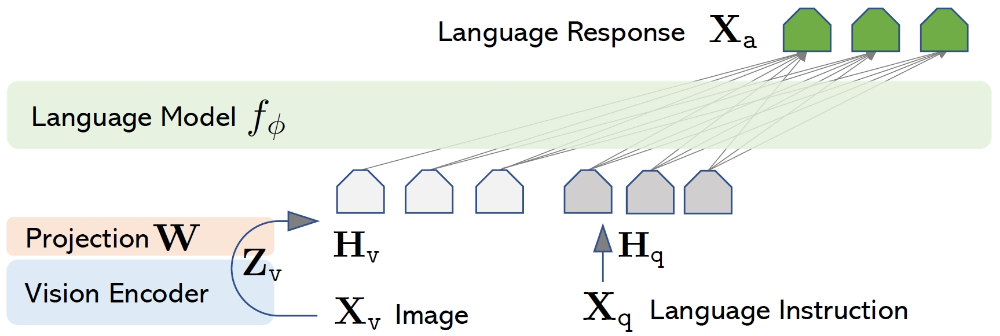
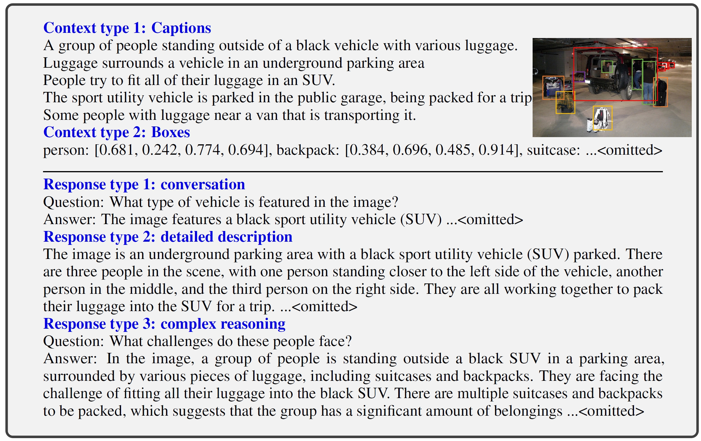
BLIP-2: Bootstrapping Language-Image Pre-training with Frozen Image Encoders and Large Language Models
Junnan Li, Dongxu Li, Silvio Savarese, Steven Hoi
Salesforce Research
International Conference on Machine Learning (ICML), 2023
- Vision encoder. ViT-L/14 from CLIP or ViT-G/14 from EVA-CLIP.
- Language model. OPT model or FlanT5.
- Querying Transformer (Q-Former). An image transformer & a text transformer, they are initialized from BERT and share the self-attention layer.
- Training. (1) Stage 1 (250K steps): learn vision-langauge representations from a frozen image encoder by optimizing the three losses used in BLIP; (2) Stage 2 (80K steps): learn vision-to-language generation from a frozen LLM.
- Data. Basically same as BLIP. Only the Q-Former is trained.
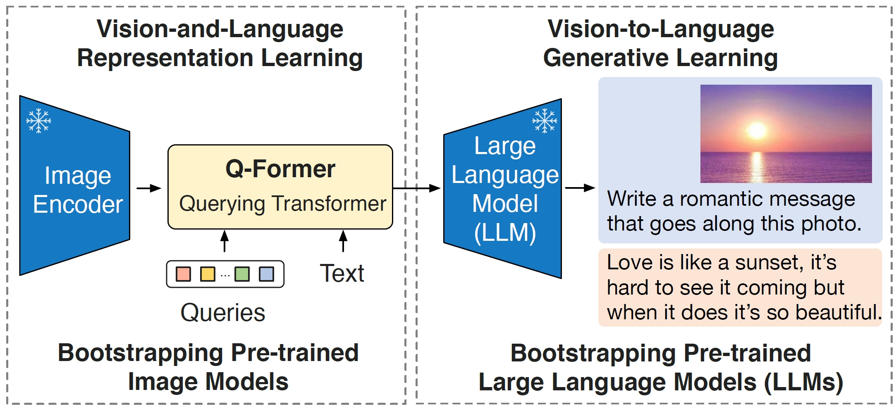
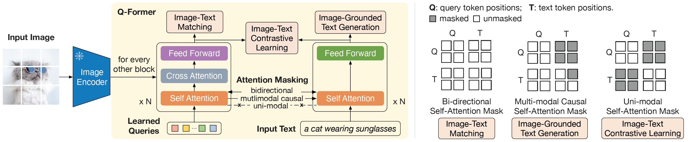
Flamingo: a Visual Language Model for Few-Shot Learning
Jean-Baptiste Alayrac, Jeff Donahue, Pauline Luc, Antoine Miech, Iain Barr, Yana Hasson, Karel Lenc, Arthur Mensch, Katie Millican, Malcolm Reynolds, Roman Ring, Eliza Rutherford, Serkan Cabi, Tengda Han, Zhitao Gong, Sina Samangooei, Marianne Monteiro, Jacob Menick, Sebastian Borgeaud, Andrew Brock, Aida Nematzadeh, Sahand Sharifzadeh, Mikolaj Binkowski, Ricardo Barreira, Oriol Vinyals, Andrew Zisserman, Karen Simonyan
DeepMind
Advances in Neural Information Processing Systems (NeurIPS), 2022
Apr 29, 2022 | Flamingo
It achieves few-shot in-context learning ability by bridging vision and language models and training on interleaved visual and textual data.
- Visual encoder. Use pre-trained and frozen Normalizer-Free ResNet, and pre-train it using contrastive loss. Images and videos (sample_fps=1) are compressed to spatio-temporal grid of features.
- Perceiver resampler (Q-Former). It processes a variable number of image or video tokens and produces a fixed number of visual tokens (64).
- Gated xattn-dense layers. They are inserted to the pre-trained, frozen language model (Chinchilla) and are trained from scratch.
- Model size. Flamingo-3B, Flamingo-9B, and Flamingo-80B.
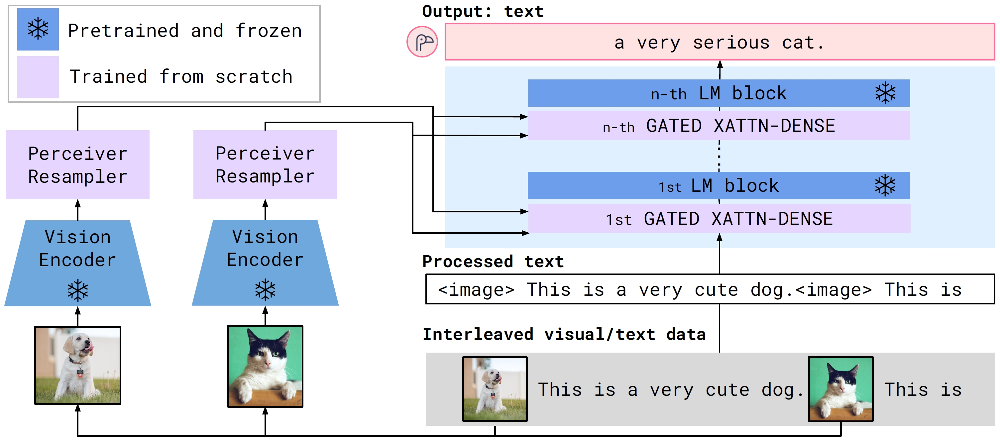
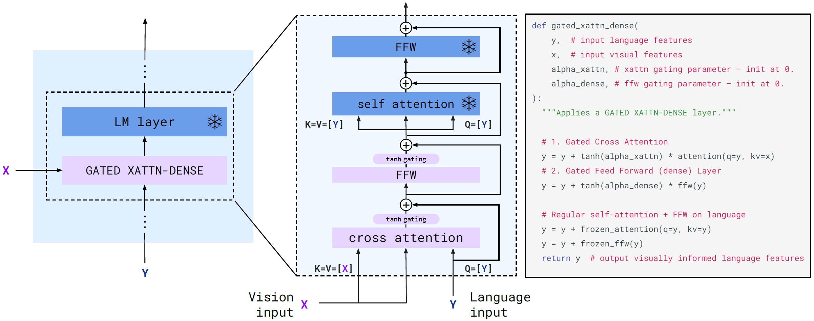
BLIP: Bootstrapping Language-Image Pre-training for Unified Vision-Language Understanding and Generation
Junnan Li, Dongxu Li, Caiming Xiong, Steven Hoi
Salesforce Research
International Conference on Machine Learning (ICML), 2022
It enables both vision-language understanding & generation by multi-task learning with a unified framework, as well as a data bootstrapping strategy.
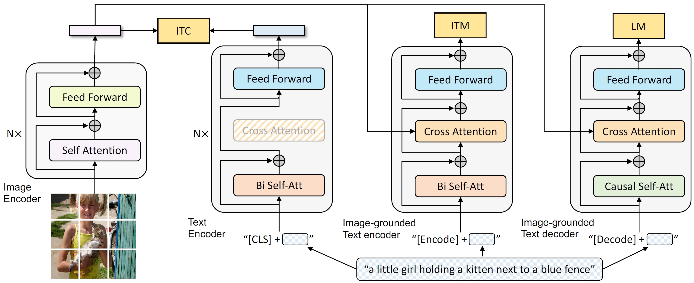
Learning Transferable Visual Models From Natural Language Supervision
Alec Radford, Jong Wook Kim, Chris Hallacy, Aditya Ramesh, Gabriel Goh, Sandhini Agarwal, Girish Sastry, Amanda Askell, Pamela Mishkin, Jack Clark, Gretchen Krueger, Ilya Sutskever
OpenAI
International Conference on Machine Learning (ICML), 2021
CLIP shifts computer vision research from high-quality, crowd-labeled data with pre-defined labels, e.g., ImageNet, to web-scale data with natural language supervision. CLIP generalizes well on visual benchmarks, and spurs research on multimodal foundation models. It has over 30,000 citations (as of Jul 2025).
By training on 400M internet text-image pairs through contrastive learning, it shows great generalization on visual benchmarks.
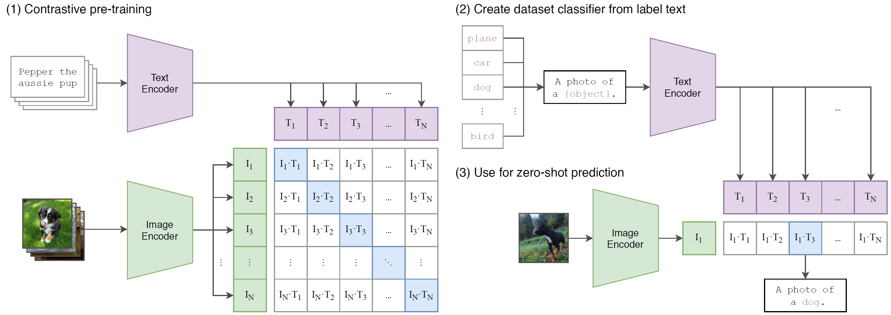 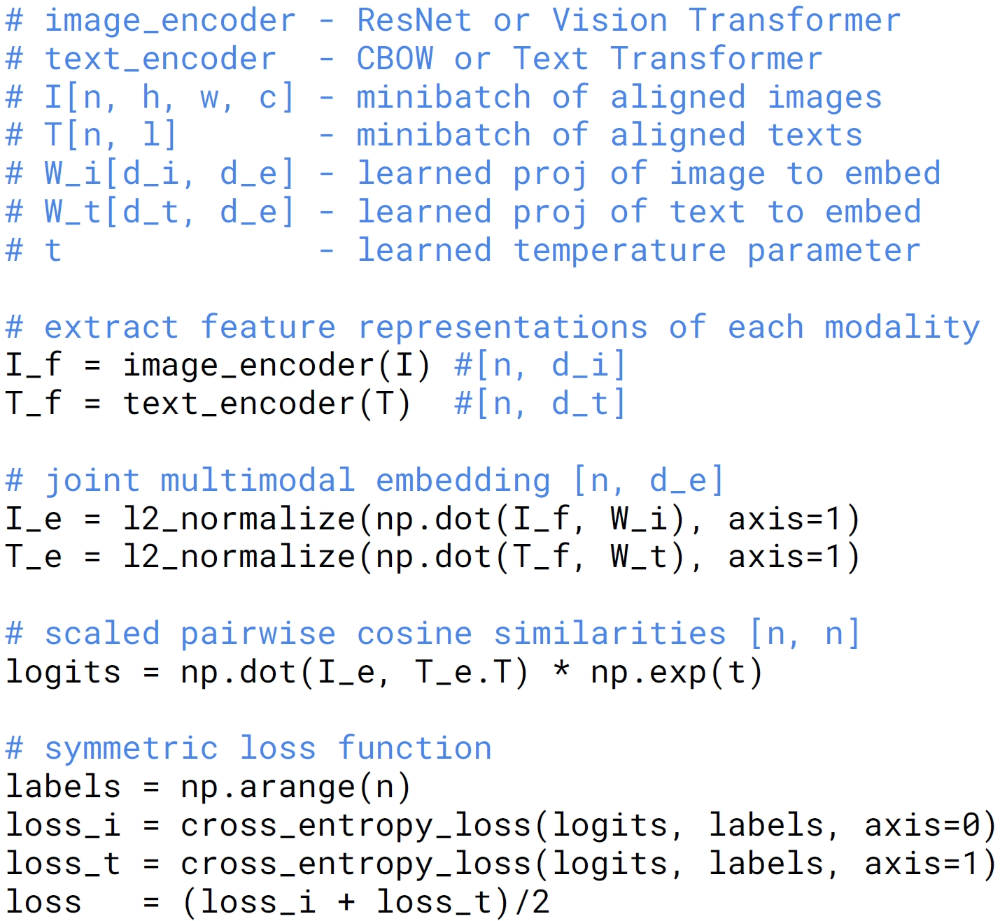 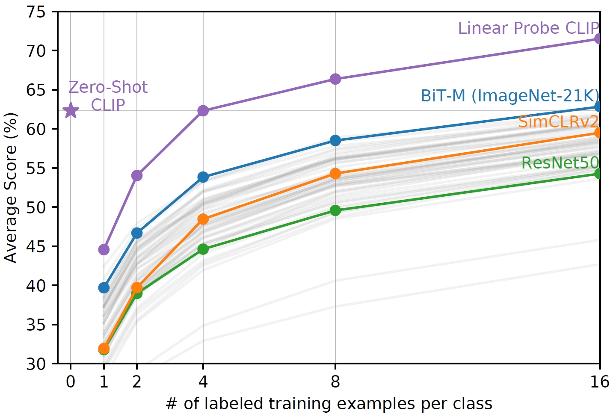 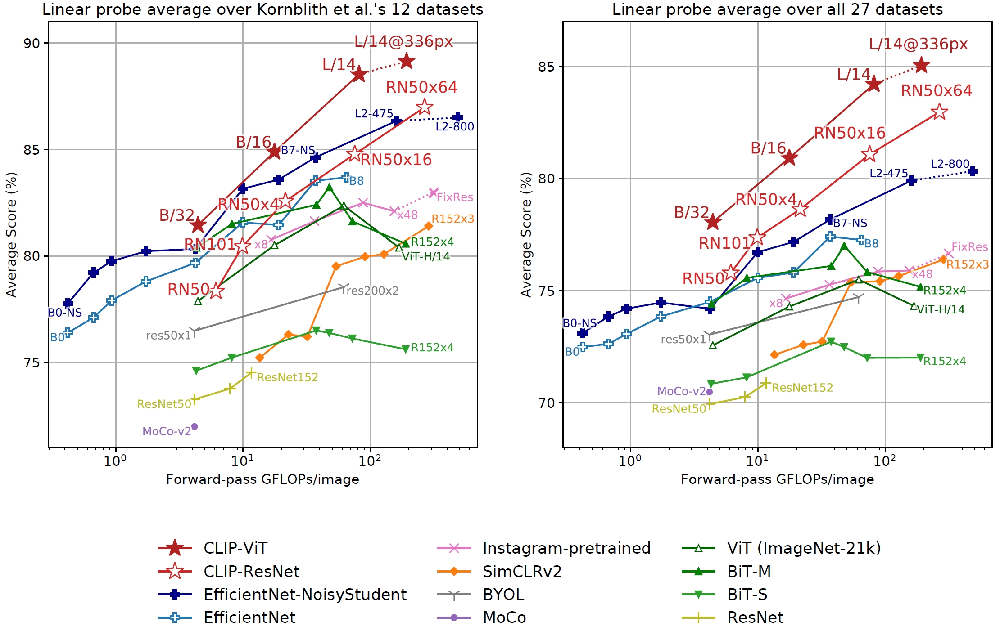 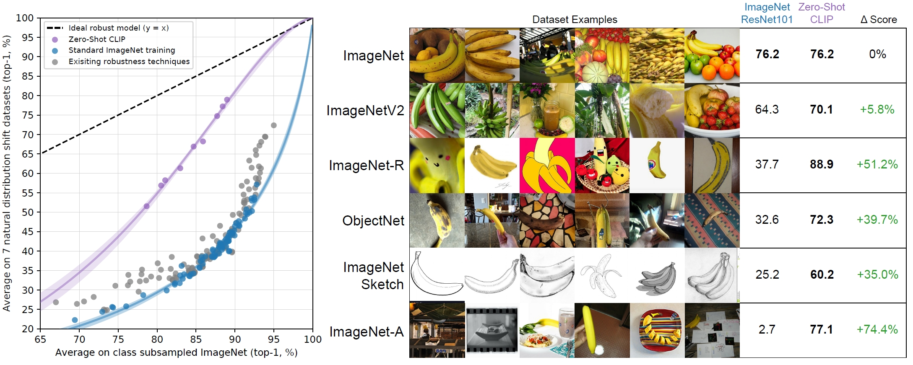
Understanding and Generation: Foundation Algorithms & Models
MMaDA: Multimodal Large Diffusion Language Models
Ling Yang, Ye Tian, Bowen Li, Xinchen Zhang, Ke Shen, Yunhai Tong, Mengdi Wang
Princeton University, Peking University, Tsinghua University, ByteDance Seed
Advances in Neural Information Processing Systems (NeurIPS), 2025
It introduces a unified discrete-diffusion foundation model that leverages Mixed Long-CoT fine-tuning and UniGRPO.
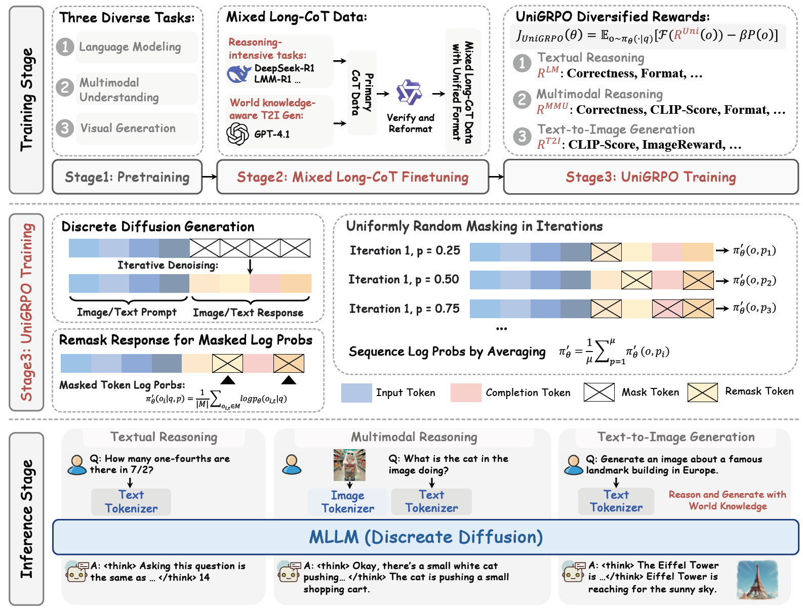
Emerging Properties in Unified Multimodal Pretraining
Chaorui Deng, Deyao Zhu, Kunchang Li, Chenhui Gou, Feng Li, Zeyu Wang, Shu Zhong, Weihao Yu, Xiaonan Nie, Ziang Song, Guang Shi, Haoqi Fan
ByteDance Seed, Shenzhen Institutes of Advanced Technology, Monash University, Hong Kong University of Science and Technology, UC Santa Cruz
arXiv, 2025
It introduces unified decoder (14B with 7B activated) with Mixture-of-Transformer-Experts (MoT) trained on trillion-scale interleaved multimodal data, achieving sota open-source performance in generation & understanding while exhibiting emergent reasoning for long-context visual tasks.
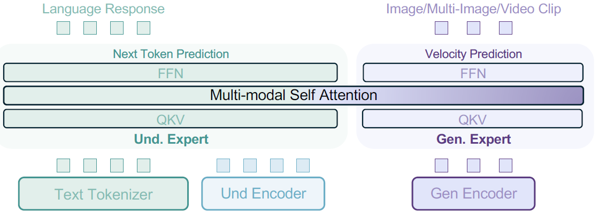 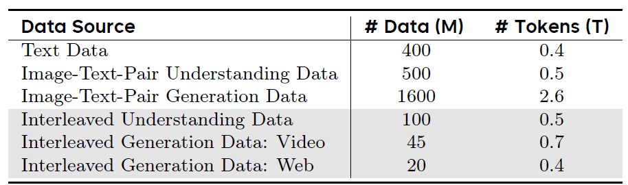 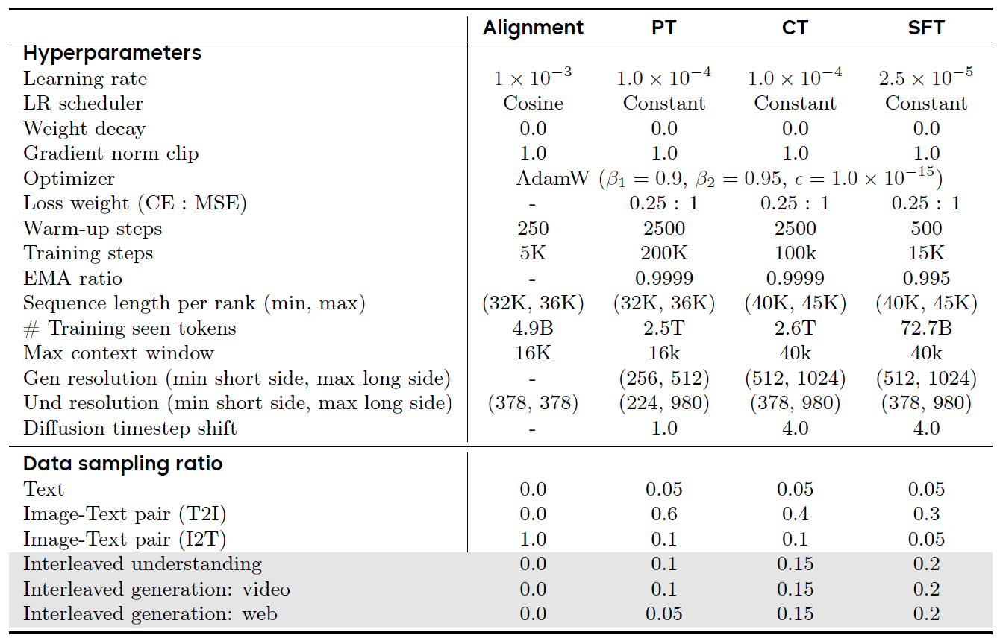
BLIP3-o: A Family of Fully Open Unified Multimodal Models-Architecture, Training and Dataset
Jiuhai Chen, Zhiyang Xu, Xichen Pan, Yushi Hu, Can Qin, Tom Goldstein, Lifu Huang, Tianyi Zhou, Saining Xie, Silvio Savarese, Le Xue, Caiming Xiong, Ran Xu
Salesforce Research, University of Maryland, Virginia Tech, New York University, University of Washington, UC Davis
arXiv, 2025
It finds it is beneficial to generate CLIP features by employing flow matching loss, and use sequential training of understanding and generation.
- Structure. Use Qwen 2.5-VL-7B-Instruct and freeze it, and train a 1.4B diffusion transformer (Lumina-Next) on it.
- Data. Pre-training data: 25M open-source data and 30M proprietary data, with captions generated by Qwen 2.5-VL. Instruction tuning data: 60K.
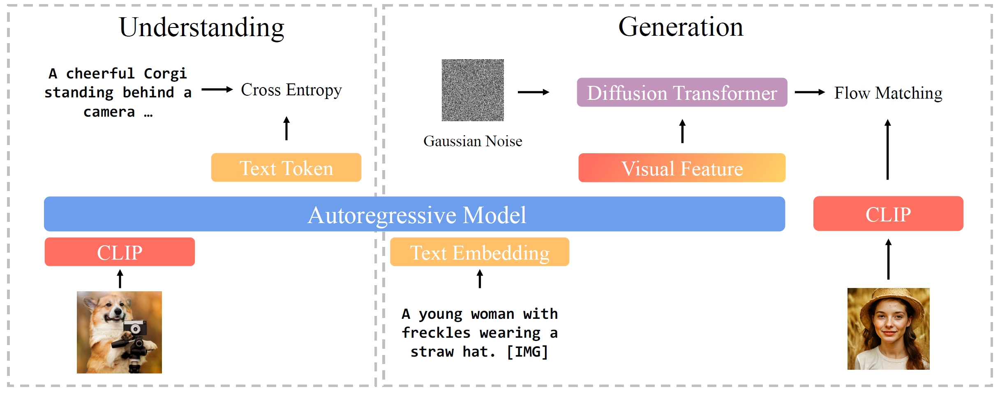
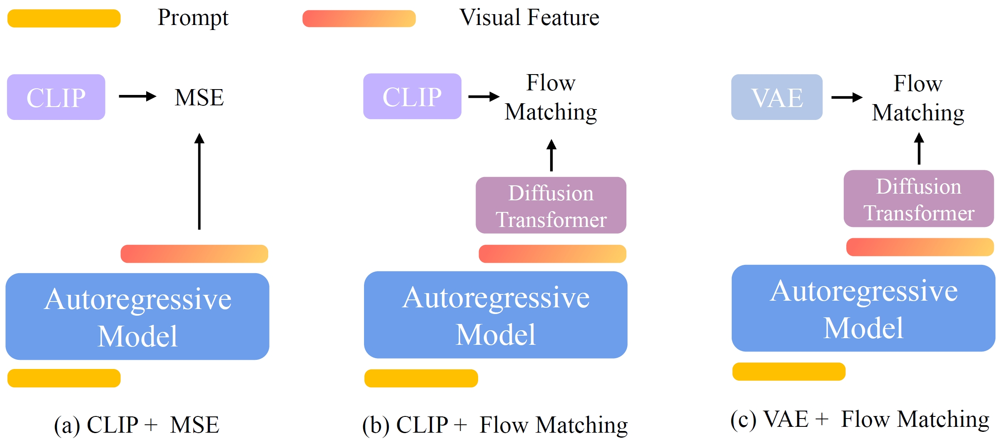
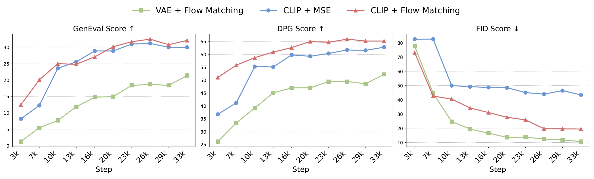
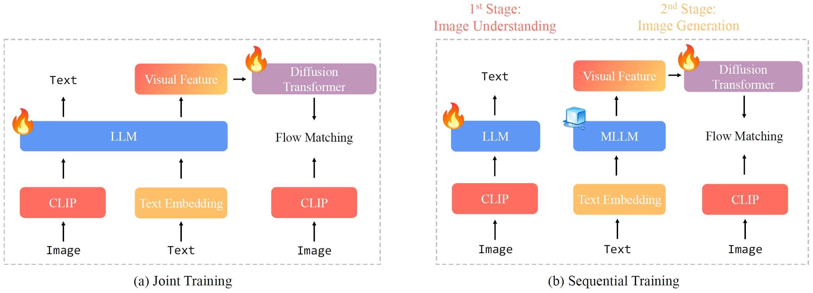
Unified Autoregressive Visual Generation and Understanding with Continuous Tokens
Lijie Fan, Luming Tang, Siyang Qin, Tianhong Li, Xuan Yang, Siyuan Qiao, Andreas Steiner, Chen Sun, Yuanzhen Li, Tao Zhu, Michael Rubinstein, Michalis Raptis, Deqing Sun, Radu Soricut
Google DeepMind, MIT
arXiv, 2025
Mar 17, 2025 | UniFluid
It achieves visual generation and understanding by applying diffusion loss on continuous visual tokens and cross-entropy loss on discrete text tokens.
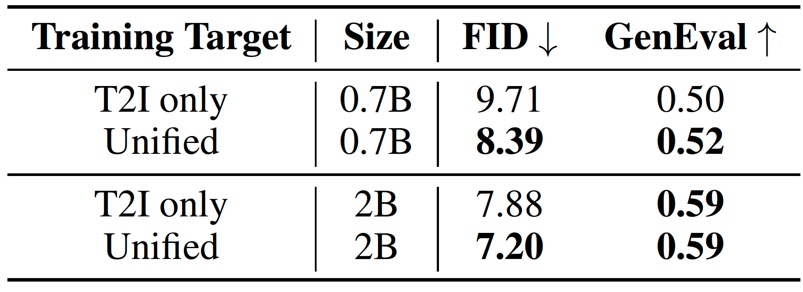 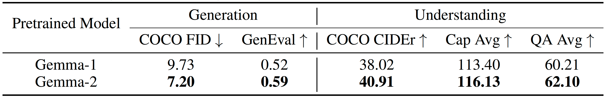

GPT-4o System Card
OpenAI
arXiv, 2024
Oct 25, 2024 | GPT-4o
It proposes a unified autoregressive model trained end-to-end across text, vision, and audio.


Transfusion: Predict the Next Token and Diffuse Images with One Multi-Modal Model
Chunting Zhou, Lili Yu, Arun Babu, Kushal Tirumala, Michihiro Yasunaga, Leonid Shamis, Jacob Kahn, Xuezhe Ma, Luke Zettlemoyer, Omer Levy
Meta, Waymo, University of Southern California
International Conference on Learning Representations (ICLR), 2025
Aug 20, 2024 | Transfusion
It trains a unified model (7B) on 2T multi-modal tokens by predicting discrete text tokens and diffusing continuous image tokens.
- Data. Use total 2T tokens from: (1) Llama 2 tokenizer and corpus (2T tokens), (2) 380M Shutterstock images and captions (resized to 256x256).
- Structure. It applies next-token prediction on discrete text tokens and diffusion loss on continuous image tokens: L=L_LM+lambda*L_diffusion. It uses modality-specific components with unshared parameters: embedding layer for text, and VAE (U-Net or linear structure, 8x8-8c) with linear or up/down blocks for images. It applies causal mask on text tokens and bidirectional mask on image tokens.
- Training details. Optimizer=AdamW, lr=3e-4, 250K steps, lambda=5, train_timesteps=1000, infer_timesteps=250, cfg=3.
- Performance. In text-to-image generation task, Transfusion exceeds Chameleon at less than a third of the compute. In image-to-text generation task, Transfusion exceeds Chameleon at 21.8% of the FLOPs. In text-to-text generation task, Transfusion exceeds Chameleon at 50% of FLOPs.
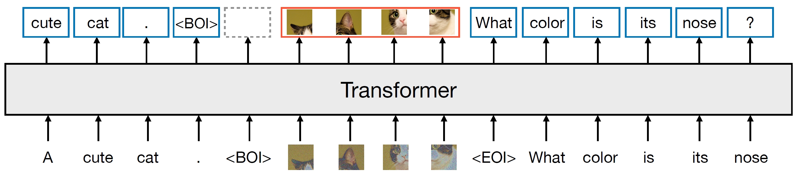
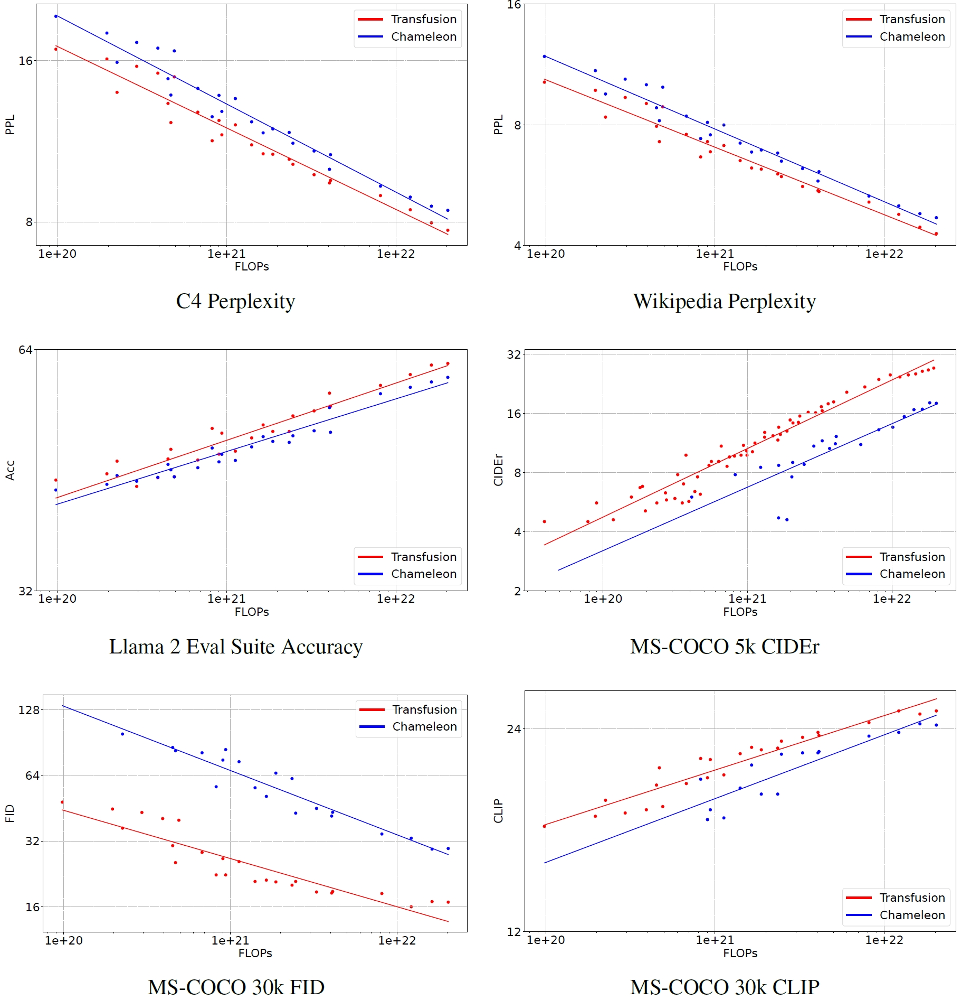
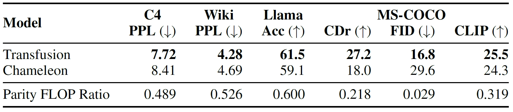
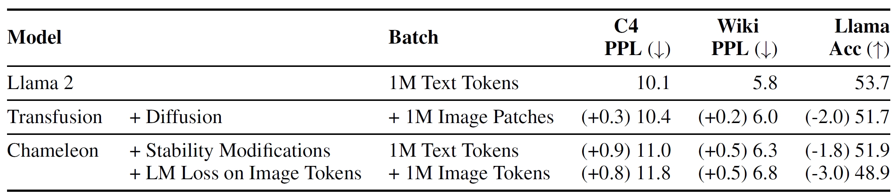
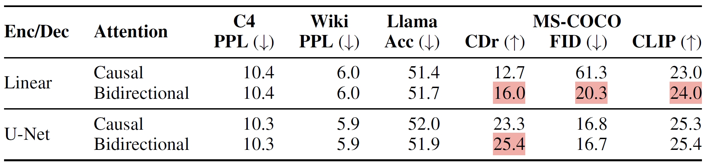
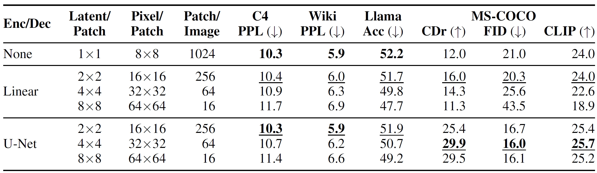
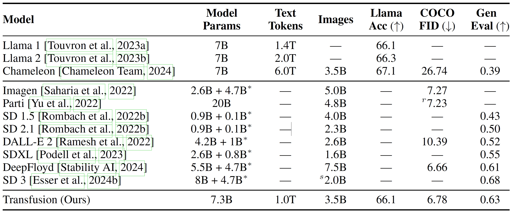
Last updated on May 22, 2026 at 09:25 (UTC-7).